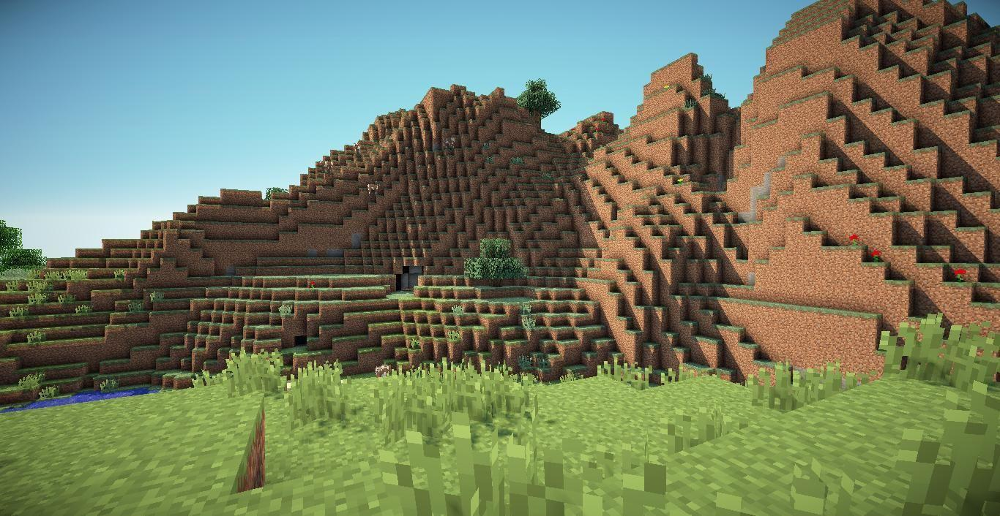
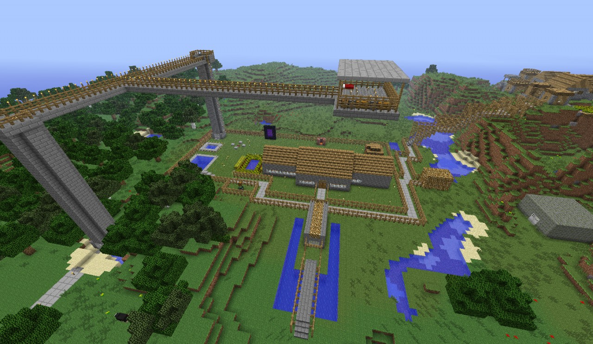

My First Minecraft Adventure
October 6, 2026 by Sheanae Brown

Minecraft is a fun game that allows players to explore different worlds
and create almost anything they could possibly imagine. When starting a new
world, the best thing to do is to ensure you collect a lot of resources.
You should also try your best to find somewhere safe for shelter before
night time.
As we explore the minecraft world, we collect materials, craft different tools
and discover new environments. Building a base gives us a space
to store resources and prepare for adventures we may have in the future.
Exploring the Minecraft World
October 6, 2026 by Sheanae Brown

Traversing Minecraft is super interesting, even more interesting than building
All the different areas in the world have different resources you can acquire, animals
and structures. Travelling away from the starting location allows the discovery of
new places and collection of materials that may not otherwise be nearby.
Exploring can also be dangerous because it can get scary and unsafe at night.
Preparing suitable tools, food and armour makes it easier to survive while
travelling through unfamiliar parts of the world.